from katlas.imports import *
import os, seaborn as sns
from fastbook import *
from scipy.stats import spearmanr, pearsonr
from PIL import Image
from tqdm import tqdm
set_sns()Compare CDDM and PSPA in Ser/Thr kinases
Setup
Load data
df = Data.get_ks_dataset()
df['SUB'] = df.substrate.str.upper()Get overlap kinase
# normalized PSPA data
norm = pd.read_csv('raw/pspa_st_norm.csv')
raw = pd.read_csv('raw/pspa_st_raw.csv')#get overlap and count
overlap_cnt = df[df.kinase_paper.isin(raw.kinase)].kinase_paper.value_counts()overlap_cntkinase_paper
PKACA 1740
ERK2 1380
CDK1 1325
IKKB 1297
ERK1 1160
...
HUNK 1
MLK4 1
CAMK1G 1
CK1A2 1
DRAK1 1
Name: count, Length: 286, dtype: int64overlap_cnt = overlap_cnt[overlap_cnt>100]overlap_cntkinase_paper
PKACA 1740
ERK2 1380
CDK1 1325
IKKB 1297
ERK1 1160
...
HIPK3 110
CDK8 107
BUB1 106
MEKK3 104
GRK1 101
Name: count, Length: 202, dtype: int64# PSPA data
raw = raw.set_index('kinase')
norm = norm.set_index('kinase')Plot
sns.set(rc={"figure.dpi":200, 'savefig.dpi':200})
sns.set_context('notebook')
sns.set_style("ticks")# aa_order = [i for i in 'PGACSTVILMFYWHKRQNDEsty']
aa_order_paper = [i for i in 'PGACSTVILMFYWHKRQNDEsty']
# position = [i for i in range(-7,8)]
position_paper = [-5,-4,-3,-2,-1,1,2,3,4]Dataset-driven vs. normalized
To generate all of other figures and save them, uncheck plt.savefig, and comment out plt.show() and break
set_sns()for k in tqdm(overlap_cnt.index,total=len(overlap_cnt)):
df_k = df.query(f'kinase_paper=="{k}"')
df_k = df_k.drop_duplicates(subset='SUB').reset_index()
paper,full = get_freq(df_k)
raw_k = get_one_kinase(norm,k,drop_s=False).T.reindex(index=aa_order_paper,columns=position_paper).round(3)
plot_heatmap(paper,f'{k} from CDDM (n={overlap_cnt[k]})')
# plt.savefig(f'corr/KS/{k}.png',bbox_inches='tight', pad_inches=0.05)
plt.show()
plt.close()
plot_heatmap(raw_k,f'{k} from PSPA')
# plt.savefig(f'corr/PSPA/{k}.png',bbox_inches='tight', pad_inches=0.05)
plt.show()
plt.close()
plot_corr(y = paper.unstack().values, #dataset driven
x = raw_k.unstack().values, # PSPA
ylabel='CDDM',
xlabel='PSPA')
plt.title(k)
# plt.savefig(f'corr/pear/{k}.png',bbox_inches='tight', pad_inches=0.2)
plt.show()
plt.close()
break 0%| | 0/202 [00:00<?, ?it/s]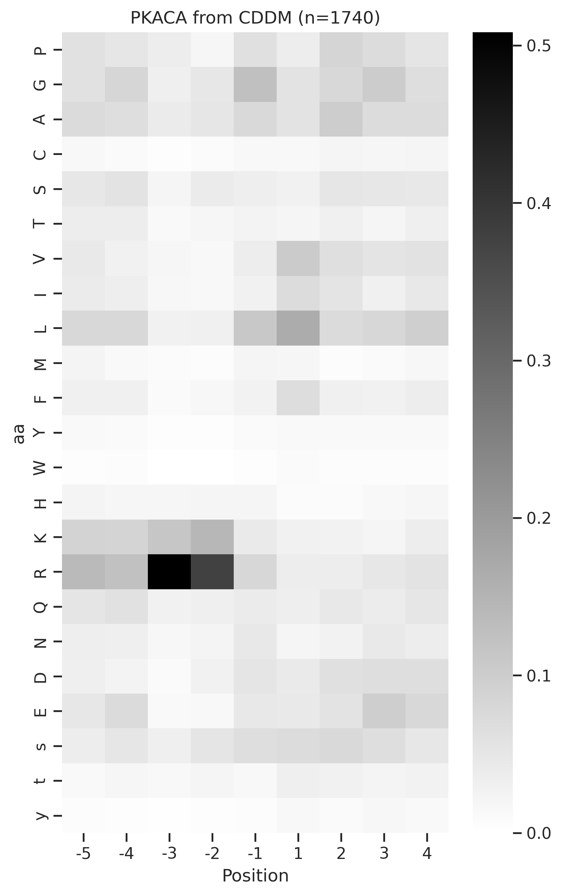
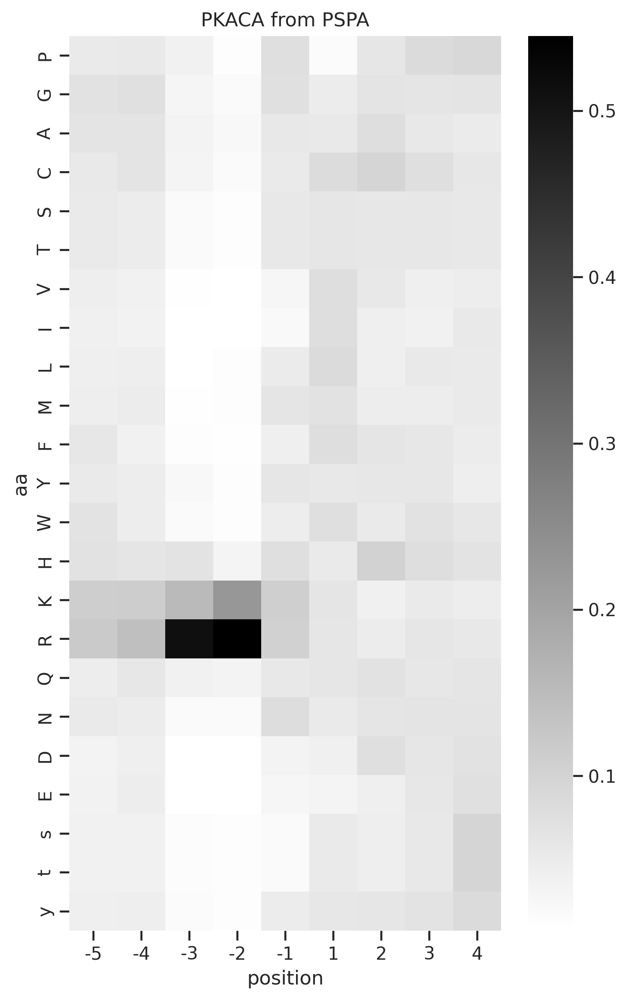
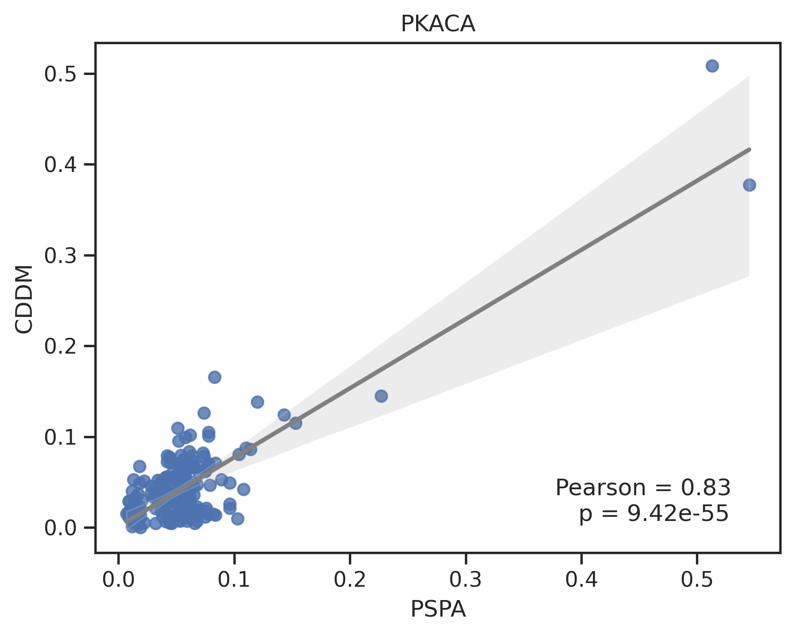
0%| | 0/202 [00:00<?, ?it/s]Combine the figures: correlation on top, and two heatmaps on the bottom
def combine_images_custom_layout(image_paths, output_path):
images = [Image.open(image_path).convert('RGBA') for image_path in image_paths]
# Calculate total width and height for the new image
total_width = max(images[0].width, images[1].width + images[2].width)
total_height = images[0].height + max(images[1].height, images[2].height)
# Create a new image with calculated dimensions
combined_image = Image.new('RGBA', (total_width, total_height))
# Paste the first image at the top-center
x_offset = (total_width - images[0].width) // 2
combined_image.paste(images[0], (x_offset, 0), images[0])
# Paste the second image at the bottom-left
combined_image.paste(images[1], (0, images[0].height), images[1])
# Paste the third image at the bottom-right
combined_image.paste(images[2], (images[1].width, images[0].height), images[2])
# Save the result
combined_image.save(output_path)Uncheck below to save combined figures
# folders = ["corr/pear",'corr/KS','corr/PSPA']
# for k in tqdm(overlap_cnt.index,total=len(overlap_cnt)):
# filename = f"{k}.png"
# image_paths = [os.path.join(folder, filename) for folder in folders]
# output_path = f"corr/combine/{k}.png"
# combine_images_custom_layout(image_paths, output_path)
# # breakPlot comparison
Correlation with raw PSPA
data = []
for k in tqdm(overlap_cnt.index):
df_k = df.query(f'kinase_paper=="{k}"')
df_k = df_k.drop_duplicates(subset='SUB').reset_index()
cnt = df_k.shape[0]
paper,full = get_freq(df_k)
raw_k = get_one_kinase(raw,k,drop_s=False).T.reindex(index=aa_order_paper,columns=position_paper).round(3)
full_corr,_ = pearsonr(raw_k.unstack().values,paper.unstack().values)
data.append([k,full_corr,cnt])100%|██████████| 202/202 [00:04<00:00, 41.24it/s]corr_raw = pd.DataFrame(data,columns= ['kinase','corr_with_raw','count_unique'])Correlation with normalized PSPA
data = []
for k in overlap_cnt.index:
df_k = df.query(f'kinase_paper=="{k}"')
df_k = df_k.drop_duplicates(subset='SUB').reset_index()
cnt = df_k.shape[0]
paper,full = get_freq(df_k)
norm_k = get_one_kinase(norm,k,drop_s=False).T.reindex(index=aa_order_paper,columns=position_paper).round(3)
full_corr,_ = pearsonr(norm_k.unstack().values,paper.unstack().values)
data.append([k,full_corr])corr_norm = pd.DataFrame(data,columns= ['kinase','corr_with_norm',
])Merge with specificity
corr = corr_raw.merge(corr_norm)m = pd.read_csv('raw/specificity_pspa.csv')corr= corr.merge(m).rename(columns={'max':'specificity'})corr| kinase | corr_with_raw | count_unique | corr_with_norm | specificity | |
|---|---|---|---|---|---|
| 0 | PKACA | 0.841437 | 1547 | 0.833627 | 0.476953 |
| 1 | ERK2 | 0.755683 | 1241 | 0.830667 | 0.510499 |
| 2 | CDK1 | 0.867922 | 1197 | 0.880447 | 0.569784 |
| 3 | IKKB | 0.151149 | 1133 | 0.278715 | 0.157279 |
| 4 | ERK1 | 0.832991 | 1048 | 0.880669 | 0.567533 |
| ... | ... | ... | ... | ... | ... |
| 197 | HIPK3 | 0.650688 | 97 | 0.709181 | 0.399684 |
| 198 | CDK8 | 0.391844 | 89 | 0.479039 | 0.542519 |
| 199 | BUB1 | 0.222991 | 86 | 0.253001 | 0.240232 |
| 200 | MEKK3 | -0.100448 | 85 | 0.008627 | 0.127274 |
| 201 | GRK1 | 0.278294 | 83 | 0.318144 | 0.184903 |
202 rows × 5 columns
corr.query('kinase == "CK1A"')| kinase | corr_with_raw | count_unique | corr_with_norm | specificity | |
|---|---|---|---|---|---|
| 116 | CK1A | 0.221291 | 293 | 0.227877 | 0.79104 |
Pearson vs. Specificity
plot_corr(x=corr.specificity.values,
y=corr.corr_with_norm.values)
plt.ylabel('Pearson\n dataset-driven vs. raw PSPA')
plt.xlabel('Kinase specificity');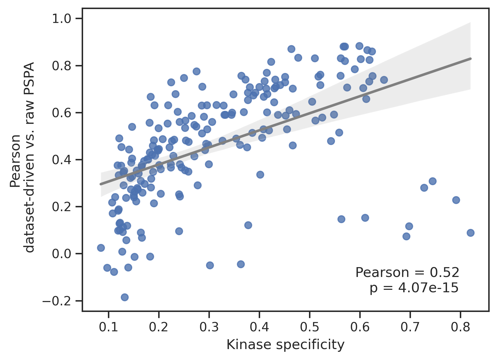
info = Data.get_kinase_info().query('pseudo=="0"')
corr2 = corr.merge(info)
color = load_pickle('raw/kinase_color.pkl')plot_bar(corr2,'corr_with_norm','group',palette=color)
plt.ylabel('Pearson');/home/zeus/miniconda3/envs/cloudspace/lib/python3.10/site-packages/katlas/plot.py:406: FutureWarning:
Passing `palette` without assigning `hue` is deprecated and will be removed in v0.14.0. Assign the `x` variable to `hue` and set `legend=False` for the same effect.
sns.barplot(data=df, x=group, y=value, order=idx, **kwargs)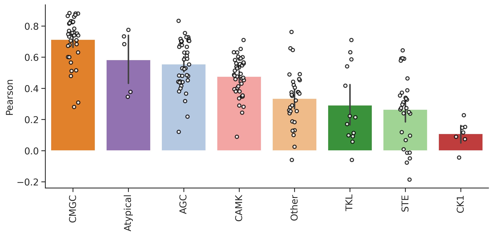
plt.figure(figsize=(7,3))
corr.corr_with_norm.hist(bins=20)
plt.xlabel('Pearson')
plt.ylabel('# Kinase')
plt.title('Distribution of Pearson score')Text(0.5, 1.0, 'Distribution of Pearson score')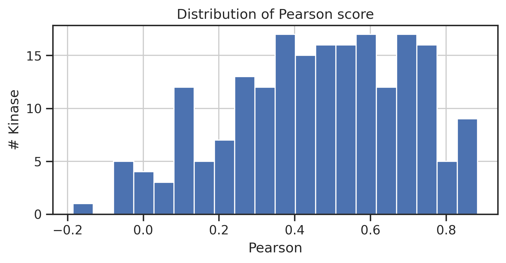
corr.plot.scatter(y='corr_with_norm',x='specificity',c='darkblue')
plt.ylabel('Pearson\n Dataset-driven vs. norm PSPA')
plt.xlabel('Kinase specificity');
# plt.title('Dataset-driven vs. raw PSPA')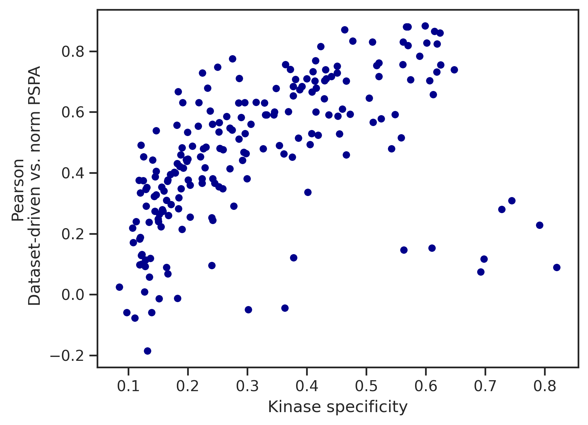
Examples of outliers
# Examples of data
k = 'CK1A'
df_k=df.query(f'kinase_paper == "{k}"')
df_k=df_k.drop_duplicates(subset='SUB')
paper, full = get_freq(df_k)
raw_k = get_one_kinase(raw,k,drop_s=False).T
raw_k = raw_k.reindex(index=aa_order_paper)
plot_heatmap(raw_k,f'{k} from raw PSPA')
plot_heatmap(paper,f'{k} from KS datasets (n={len(df_k)})')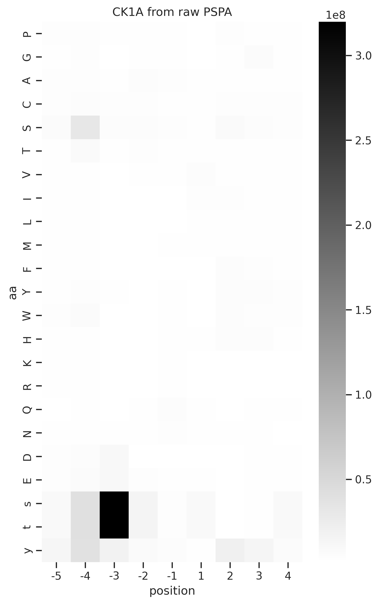
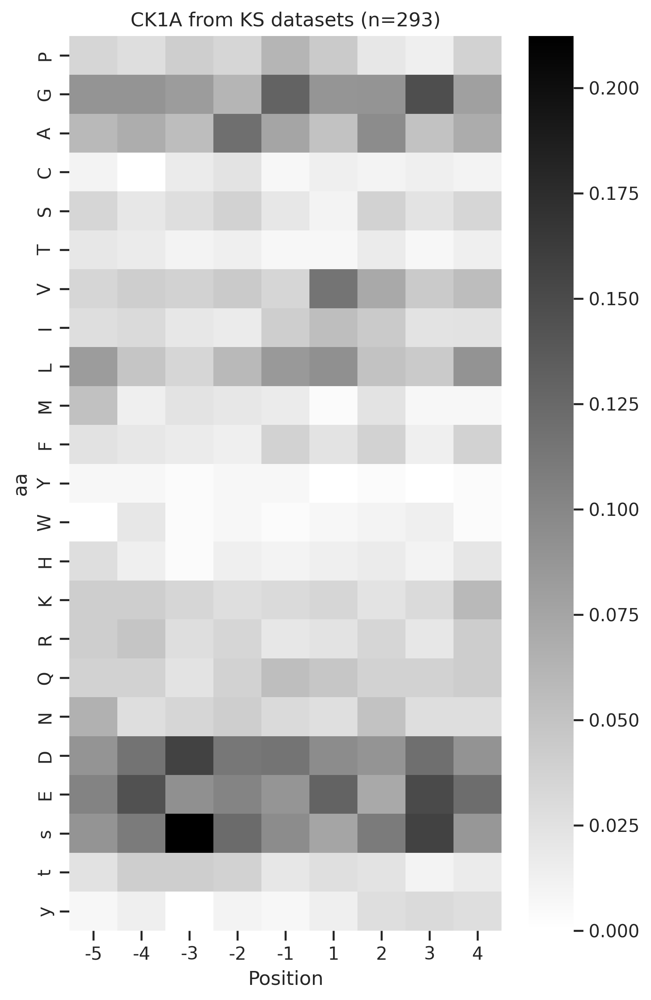
To check all of the outliers, uncheck below
# # Examples of data
# for k in corr.query('corr_with_norm<0.4 & specificity>0.55').kinase:
# df_k=df.query(f'kinase_paper == "{k}"')
# df_k=df_k.drop_duplicates(subset='SUB')
# paper, full = get_freq(df_k)
# raw_k = get_one_kinase(raw,k,drop_s=False).T
# raw_k = raw_k.reindex(index=aa_order_paper)
# plot_heatmap(raw_k,f'{k} from raw PSPA')
# plot_heatmap(paper,f'{k} from KS datasets (n={len(df_k)})')Pearson with raw vs. Pearson with norm
melt = pd.melt(corr[['corr_with_raw','corr_with_norm']])melt['variable'] = melt.variable.replace({'corr_with_raw':'raw','corr_with_norm':'normalized'})def plot_box(data,x,y,dots=True):
if dots:
sns.stripplot(data=data,x=x,y=y)
sns.boxplot(data=data, x=x, y=y, palette='pastel')plot_box(melt,'variable','value')
plt.ylabel('Pearson \nDataset-driven vs. PSPA')
plt.xlabel('PSPA');/tmp/ipykernel_83057/2080842337.py:4: FutureWarning:
Passing `palette` without assigning `hue` is deprecated and will be removed in v0.14.0. Assign the `x` variable to `hue` and set `legend=False` for the same effect.
sns.boxplot(data=data, x=x, y=y, palette='pastel')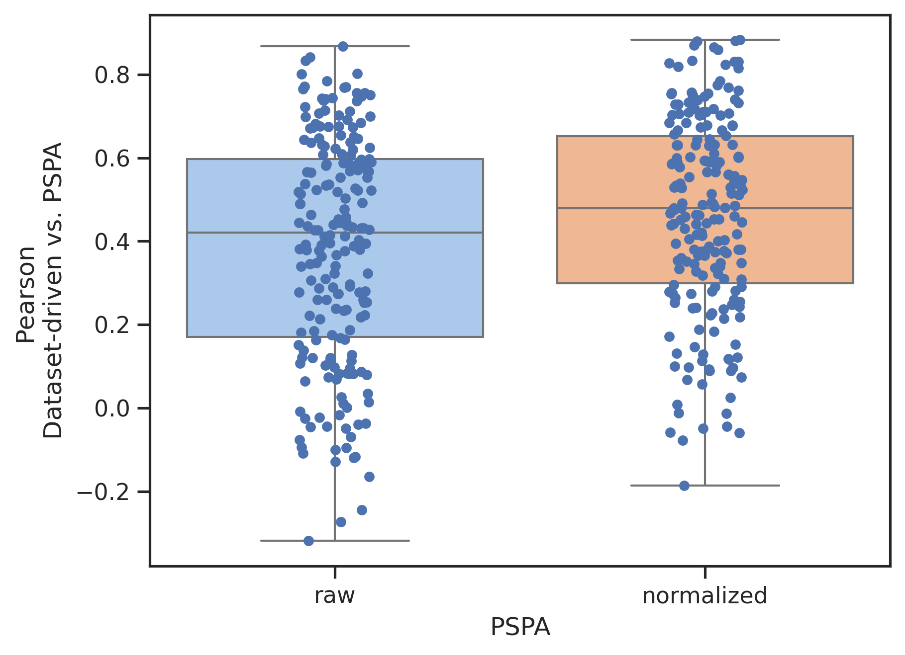
Find out the factor that cause the biggest change in correlation
Plot the kinase with biggest change in pearson after normalization; uncheck ‘break’ to run all
for k in corr.sort_values('change_corr',ascending=False).kinase[:5]:
df_k=df.query(f'kinase_paper == "{k}"')
df_k = df_k.drop_duplicates(subset="SUB")
paper, full = get_freq(df_k)
raw_k = get_one_kinase(raw,k,drop_s=False).T
raw_k = raw_k.reindex(index=aa_order_paper)
norm_k = get_one_kinase(norm,k,drop_s=False).T
norm_k = norm_k.reindex(index=aa_order_paper)
plot_heatmap(raw_k,f'{k} from raw PSPA')
plot_heatmap(norm_k,f'{k} from normalized PSPA')
plot_heatmap(paper,f'{k} from KS datasets (n={len(df_k)})')
break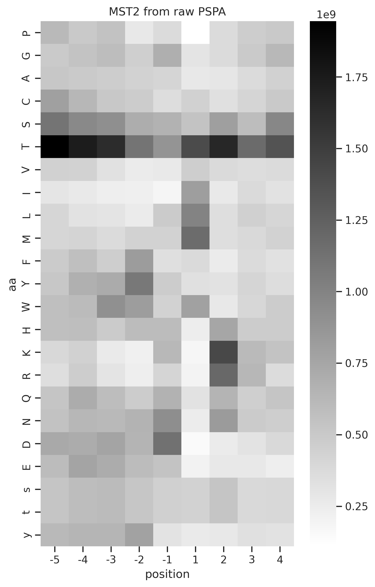
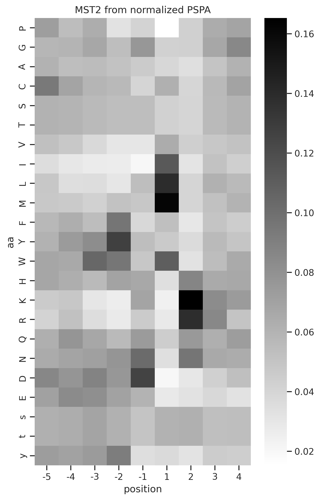
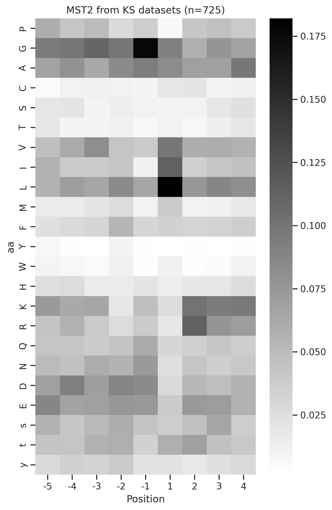
Calculate S and T ratio
data = []
for k in overlap_cnt.index:
# paper, full = get_freq(df,k)
raw_k = get_one_kinase(raw,k,drop_s=False).T
raw_k = raw_k.reindex(index=aa_order_paper)
s_ratio = (raw_k.loc['S']/raw_k.sum()).median() #use median because it can better reflect the distribution of the data than the average
t_ratio = (raw_k.loc['T']/raw_k.sum()).median()
data.append([k,s_ratio,t_ratio])ST_ratio = pd.DataFrame(data,columns=['kinase','S_ratio','T_ratio'])corr = corr.merge(ST_ratio)corr| kinase | corr_with_raw | count_unique | corr_with_norm | specificity | change_corr | S_ratio | T_ratio | |
|---|---|---|---|---|---|---|---|---|
| 0 | PKACA | 0.841437 | 1547 | 0.833627 | 0.476953 | -0.007810 | 0.056639 | 0.033424 |
| 1 | ERK2 | 0.755683 | 1241 | 0.830667 | 0.510499 | 0.074984 | 0.051646 | 0.051311 |
| 2 | CDK1 | 0.867922 | 1197 | 0.880447 | 0.569784 | 0.012526 | 0.063222 | 0.048285 |
| 3 | IKKB | 0.151149 | 1133 | 0.278715 | 0.157279 | 0.127567 | 0.081216 | 0.040976 |
| 4 | ERK1 | 0.832991 | 1048 | 0.880669 | 0.567533 | 0.047678 | 0.063722 | 0.053194 |
| ... | ... | ... | ... | ... | ... | ... | ... | ... |
| 197 | HIPK3 | 0.650688 | 97 | 0.709181 | 0.399684 | 0.058493 | 0.054908 | 0.049153 |
| 198 | CDK8 | 0.391844 | 89 | 0.479039 | 0.542519 | 0.087195 | 0.073872 | 0.041969 |
| 199 | BUB1 | 0.222991 | 86 | 0.253001 | 0.240232 | 0.030010 | 0.048003 | 0.042768 |
| 200 | MEKK3 | -0.100448 | 85 | 0.008627 | 0.127274 | 0.109075 | 0.051621 | 0.068361 |
| 201 | GRK1 | 0.278294 | 83 | 0.318144 | 0.184903 | 0.039849 | 0.052647 | 0.029514 |
202 rows × 8 columns
corr.corr(numeric_only=True)| corr_with_raw | count_unique | corr_with_norm | specificity | change_corr | S_ratio | T_ratio | |
|---|---|---|---|---|---|---|---|
| corr_with_raw | 1.000000 | 0.141216 | 0.968214 | 0.594262 | -0.566374 | 0.171268 | -0.445375 |
| count_unique | 0.141216 | 1.000000 | 0.199915 | 0.056954 | 0.128221 | 0.155907 | 0.001734 |
| corr_with_norm | 0.968214 | 0.199915 | 1.000000 | 0.515635 | -0.342232 | 0.256669 | -0.302619 |
| specificity | 0.594262 | 0.056954 | 0.515635 | 1.000000 | -0.533407 | -0.001163 | -0.295673 |
| change_corr | -0.566374 | 0.128221 | -0.342232 | -0.533407 | 1.000000 | 0.202328 | 0.675979 |
| S_ratio | 0.171268 | 0.155907 | 0.256669 | -0.001163 | 0.202328 | 1.000000 | -0.074444 |
| T_ratio | -0.445375 | 0.001734 | -0.302619 | -0.295673 | 0.675979 | -0.074444 | 1.000000 |
Check change_corr column in the correlation plot, it seems T ratio is highly correlated with change_corr
plot_corr(y=corr.change_corr,x=corr.T_ratio)
plt.xlabel('T ratio in raw PSPA')
plt.ylabel('Δ Pearson');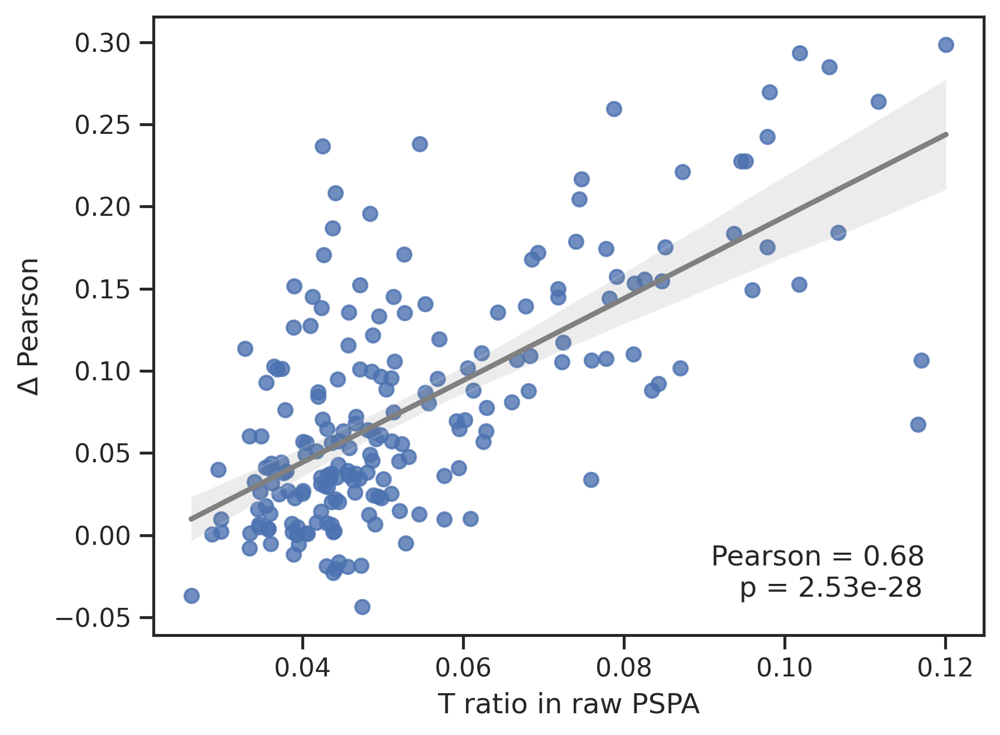